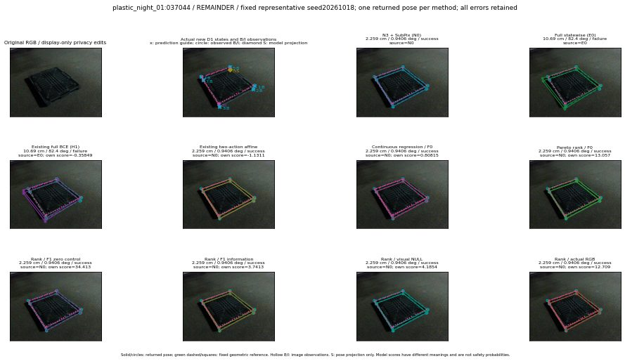

실선은 반환 자세, 초록 점선은 고정 기하 참조입니다. S는 영상 관측이 아닙니다. 점수는 모델별 의미가 다르며 보정된 안전 확률이 아닙니다. 개인정보 처리는 표시 사본에만 적용했습니다.
| 방법·seed | 위치 / 회전 / 공동성공 | 실제 출처 | 선택 후보 | 각 모델 자체 점수 |
|---|---|---|---|---|
| N0 | 2.259 cm / 0.9406 deg / success | N0 | N/A | N/A |
| E0 | 10.69 cm / 82.4 deg / failure | E0 | N/A | N/A |
| E0_REGENERATED | 10.69 cm / 82.4 deg / failure | E0 | E0_REGENERATED | N/A |
| POSEFIX_SUBPIX_PF_ANCHOR | 2.587 cm / 1.158 deg / success | OTHER | N/A | N/A |
| POSEFIX_SUBPIX_YOLO_ANCHOR | 2.515 cm / 1.118 deg / success | OTHER | N/A | N/A |
| D1_H1_MLP_s20261018 | 10.69 cm / 82.4 deg / failure | E0 | E0_REGENERATED | -0.3584917187690735 |
| D1_H1_MLP_s20261019 | 10.69 cm / 82.4 deg / failure | E0 | E0_REGENERATED | -0.938542366027832 |
| D1_H1_MLP_s20261020 | 10.69 cm / 82.4 deg / failure | E0 | E0_REGENERATED | -1.930357813835144 |
| D1_H1_PAIR_MLP_s20261018 | 2.259 cm / 0.9406 deg / success | N0 | N0 | -2.323287010192871 |
| D1_H1_PAIR_MLP_s20261019 | 2.259 cm / 0.9406 deg / success | N0 | N0 | -1.8616904020309448 |
| D1_H1_PAIR_MLP_s20261020 | 2.259 cm / 0.9406 deg / success | N0 | N0 | -2.4871559143066406 |
| D1_H1_PAIR_ROLE_AFFINE_s20261018 | 2.259 cm / 0.9406 deg / success | N0 | N0 | -1.131130576133728 |
| D1_H1_PAIR_ROLE_AFFINE_s20261019 | 2.259 cm / 0.9406 deg / success | N0 | N0 | -1.1683948040008545 |
| D1_H1_PAIR_ROLE_AFFINE_s20261020 | 2.259 cm / 0.9406 deg / success | N0 | N0 | -1.0119835138320923 |
| R_CONT_F0_s20261018 | 2.259 cm / 0.9406 deg / success | N0 | N0 | 0.808154284954071 |
| R_CONT_F0_s20261019 | 2.259 cm / 0.9406 deg / success | N0 | N0 | 0.8232491612434387 |
| R_CONT_F0_s20261020 | 2.259 cm / 0.9406 deg / success | N0 | N0 | 0.8492662310600281 |
| R_ORDER_F0_s20261018 | 2.259 cm / 0.9406 deg / success | N0 | N0 | 13.057175636291504 |
| R_ORDER_F0_s20261019 | 2.259 cm / 0.9406 deg / success | N0 | N0 | 12.894722938537598 |
| R_ORDER_F0_s20261020 | 2.259 cm / 0.9406 deg / success | N0 | N0 | -5.926719665527344 |
| R_ORDER_F1_ZERO_s20261018 | 2.259 cm / 0.9406 deg / success | N0 | N0 | 34.41277313232422 |
| R_ORDER_F1_ZERO_s20261019 | 10.69 cm / 82.4 deg / failure | E0 | E0_REGENERATED | 43.35601043701172 |
| R_ORDER_F1_ZERO_s20261020 | 2.259 cm / 0.9406 deg / success | N0 | N0 | 16.773534774780273 |
| R_ORDER_F1_s20261018 | 2.259 cm / 0.9406 deg / success | N0 | N0 | 3.7412922382354736 |
| R_ORDER_F1_s20261019 | 2.259 cm / 0.9406 deg / success | N0 | N0 | 7.420241832733154 |
| R_ORDER_F1_s20261020 | 2.259 cm / 0.9406 deg / success | N0 | N0 | 0.40439218282699585 |
| V_ORDER_NULL_s20261018 | 2.259 cm / 0.9406 deg / success | N0 | N0 | 4.18541145324707 |
| V_ORDER_NULL_s20261019 | 2.259 cm / 0.9406 deg / success | N0 | N0 | 2.622992515563965 |
| V_ORDER_NULL_s20261020 | 2.259 cm / 0.9406 deg / success | N0 | N0 | 1.840909481048584 |
| V_ORDER_RGB_s20261018 | 2.259 cm / 0.9406 deg / success | N0 | N0 | 12.708553314208984 |
| V_ORDER_RGB_s20261019 | 2.259 cm / 0.9406 deg / success | N0 | N0 | 1.8689193725585938 |
| V_ORDER_RGB_s20261020 | 2.259 cm / 0.9406 deg / success | N0 | N0 | -10.239815711975098 |